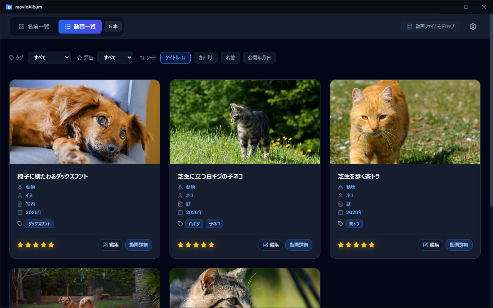

TagPlayerについて
TagPlayerは柔軟なタグ機能を備えたWindows用音楽プレイヤーです。
一般的な音楽プレイヤーでは「ジャンル」「アルバムアーティスト」「アーティスト」「リリース年」といった項目でアルバムや曲を整理できます。しかし、それぞれの項目には単一の値しか設定できないものがほとんどでしょう。そのため、
- 複数のジャンルにまたがるアルバム／曲は両方で引けるようにしたい。
- 特定の時代や地域の音楽をジャンルにこだわらず聴きたい。
- ライブ録音など、自分好みの項目を設定したい。
といった要望をかなえるのは困難でした。
TagPlayerはタグ機能によりこれらを可能にします。
主な機能
- 「ジャンル」「アーティスト」「リリース年」「作曲者」「その他」のタググループを用意。
- アルバム登録時にジャケット画像、ジャンル、アルバムアーティスト、リリース年、アーティスト、作曲者を自動取得。
- 自動取得タグに加え、ユーザーがカスタムタグを設定可能。
TagPlayerでより充実した音楽体験を！

対応ファイル形式
- mp3
- m4a
- wma
- など
アップデート履歴
- version 1.0.0
-
- 初回リリース。
プライバシーポリシー
- このアプリは、個人情報、またはデバイス情報などの個人を特定できる情報を収集、保存、送信しません。
- 外部サーバーや第三者との情報の共有は一切行いません。